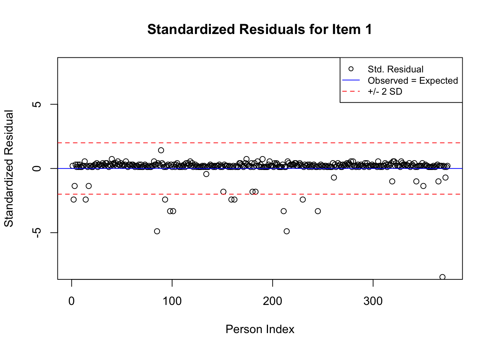
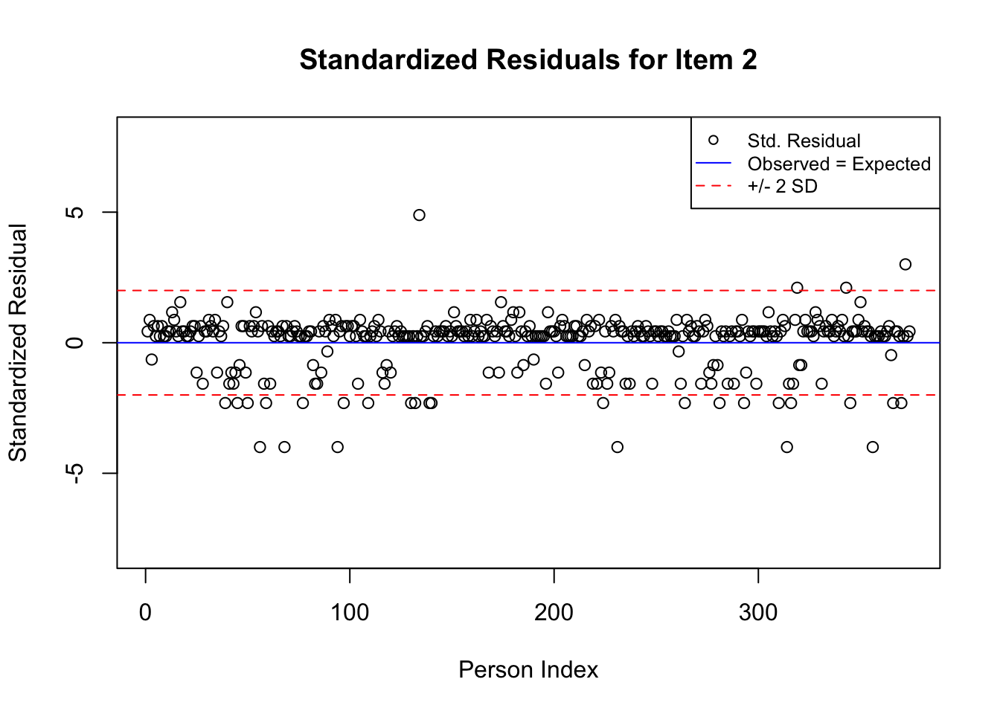
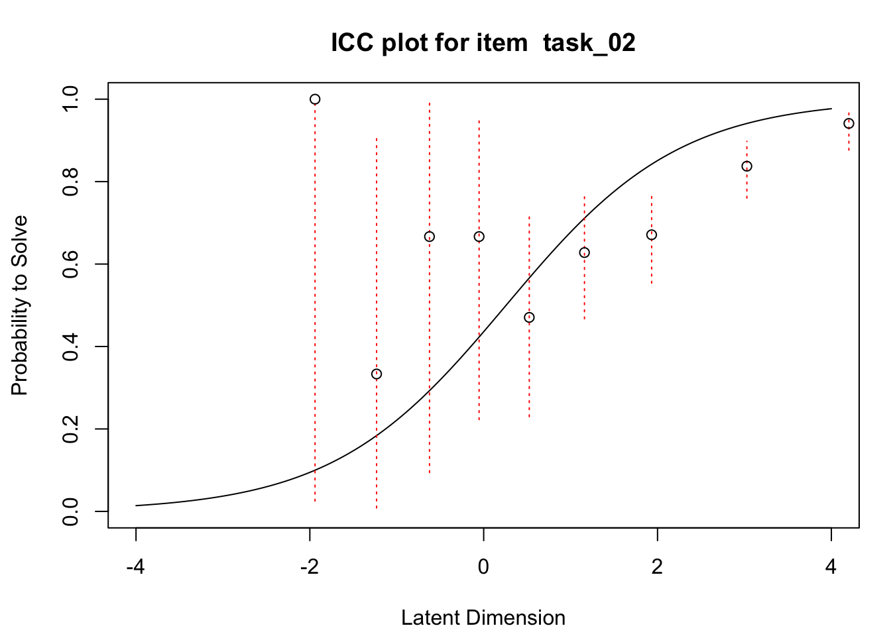
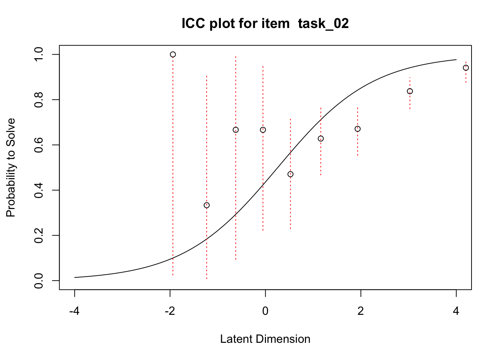
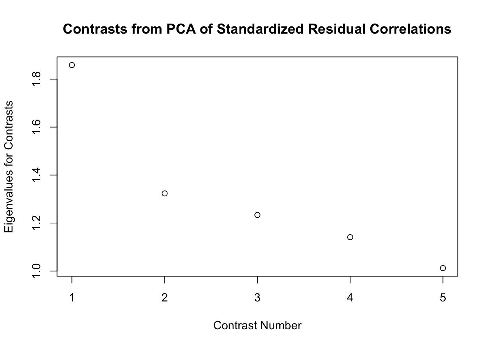
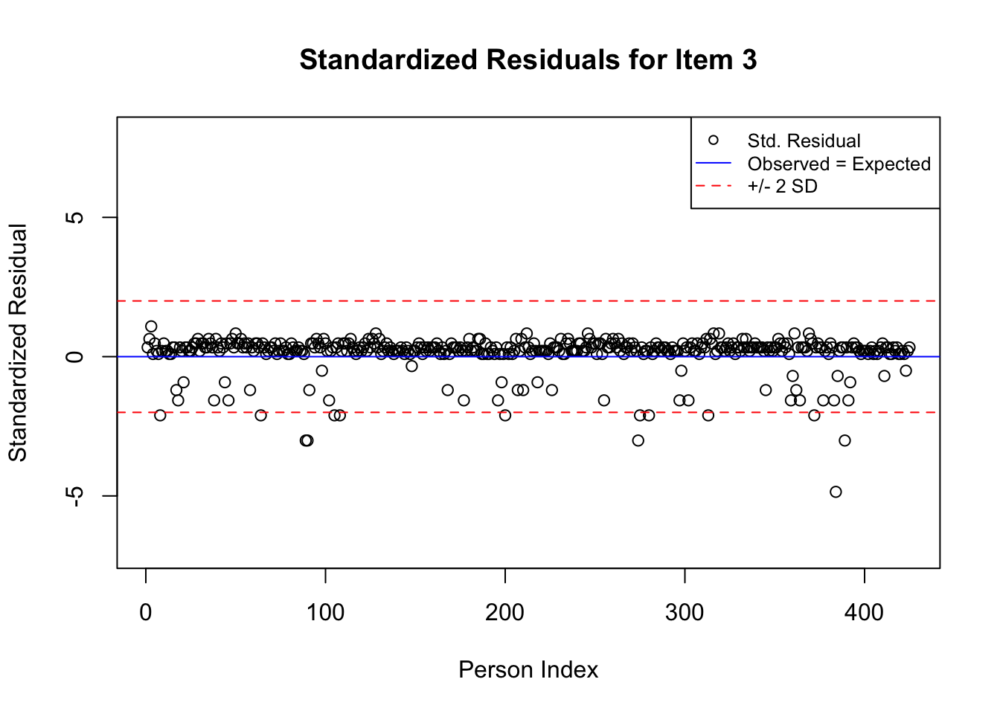
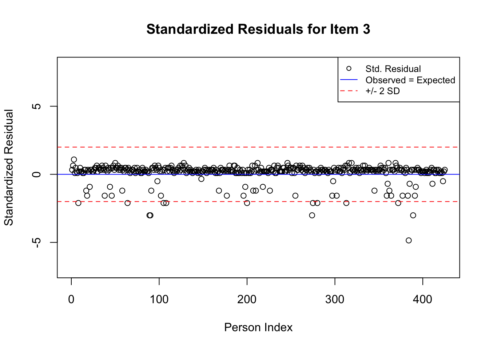

Chapter 3 Evaluating the Quality of Measures
This chapter provides an overview of several popular analyses that researchers can use to evaluate the quality of Rasch model results. Within the framework of Rasch measurement theory (Rasch 1960), evaluating the quality of measures primarily involves exploring the degree to which the observed data (e.g., item responses) reflect fundamental measurement properties, as expressed in Rasch model requirements.
Procedures for evaluating measurement quality from a Rasch measurement perspective mostly include techniques for evaluating model-data fit. Accordingly, this chapter begins with a brief overview of model-data fit analysis from the perspective of Rasch measurement theory (Rasch 1960). Then, we demonstrate tools that analysts can use to evaluate model-data fit for Rasch models using R. As we did in Chapter 2, we use data from a transitive reasoning assessment (Sijtsma and Molenaar 2002) to illustrate the application and interpretation of numeric and graphical model-data fit indicators The chapter concludes with a challenge exercise and resources for further study.
We encourage readers to note that model-data fit analysis in modern measurement theory in general, as well as in the context of Rasch models in particular, is nuanced. The interpretation and use of model-data fit indices varies along with the individual purpose and consequences of each assessment. As a result, it is critical that analysts consider the unique context in which they are evaluating model-data fit when they interpret the results from model-data fit analyses, rather than relying on previously published critical values or “rules-of-thumb” to interpret the results. In this chapter, we demonstrate techniques that analysts can use to evaluate model-data fit within the Rasch measurement theory framework. Our presentation is not exhaustive and there are many other methods that can be used to supplement those that we demonstrate here. We encourage interested readers to consult the resources listed throughout the chapter, as well as the resource list at the end of this chapter, to learn more about evaluating model-data fit within the context of Rasch measurement theory.
3.1 Evaluating Measurement Quality from the Perspective of Rasch Measurement Theory
When researchers evaluate model-data fit for Rasch models, they do so for the purpose of evaluating the psychometric quality of assessment procedures. In addition, such analyses often include analyses related to issues of reliability, validity, and fairness. At the end of this chapter, we demonstrate techniques for calculating reliability indices using a Rasch approach. For additional discussions about these topics and demonstrations of how Rasch measurement indicators align with these foundational areas for evaluating psychometric procedures, we refer readers to the following resources:
- Engelhard, George. and Wind, Stefanie A. Invariant measurement with raters and rating scales: Rasch models for rater-mediated assessments. Taylor & Francis, 2018.
(Edward W. Wolfe and Smith Jr 2007a)
- Wolfe, Edward W. and Everrett V. Smith Jr. “Instrument development tools and activities for measure validation using Rasch models: Part I - instrument development tools.” Journal of Applied Measurement, 8(1), 2007a, 97–123.
(Edward W. Wolfe and Smith Jr 2007b)
- Wolfe,Edward W. and Everrett V. Smith Jr. “Instrument development tools and activities for measure validation using Rasch models: Part II–validation activities.” Journal of Applied Measurement, 8(2), 2007b, 204–234.
In the context of Rasch measurement theory (Rasch 1960), model-data fit analyses focus on evaluating the item response patterns associated with individual items, persons, and other elements of an assessment context (e.g., raters) for evidence of adherence to model requirements. This approach to model-data fit analysis helps researchers identify individual elements whose responses deviate from what would be expected given adherence to the Rasch model. Wright and Masters (Wright and Masters 1982) summarized this perspective as follows:
“The model is constructed to govern our use of data according to the characteristics we require of a measure and to show us, through the exposure of discrepancies between intention and experience, where our efforts to measure are threatened.” (p. 90, emphasis added)
Deviations from model expectations can alert researchers to individual elements of an assessment context that warrant additional investigation (e.g., in using qualitative analyses), revision (e.g., revisions to item text, revision of scoring materials in performance assessments), that can inform their theory about the construct, and that can help them identify areas for future research. This individual-element-focused approach to evaluating model-data fit in which model requirements are used as a framework against which to evaluate response patterns for the purpose of improving measurement procedures stands in contrast to model-data fit approaches whose goal is typically to match response patterns to a model whose parameters reflect them. This approach guides the analyses that we demonstrate in this book.
Residual-Based Fit Analyses
We focus on residual-based model-data fit indicators that are theoretically aligned with the Rasch measurement framework. Specifically, we demonstrate how analysts can calculate numeric and graphical summaries of residuals, or discrepancies between observed item responses and responses that would be expected given model estimates. In the framework of Rasch measurement theory, researchers typically examine residuals as they relate to individual items, persons, or other elements of the assessment context. These residual analyses provide insight into the degree to which the responses associated with elements of interest reflect model expectations.
Residuals (\(Y_{ni}\)) are calculated as follows:
\[\begin{equation}\tag{3.1} Y_{ni} = X{ni} - E{ni} \end{equation}\]
where \(X{ni}\) is the observed response from person n on item i, and \(E{ni}\) is the model-expected value of the response for person n on item i.
To evaluate the magnitude of residuals, it is often useful to transform them to standardized residuals (\(Z{ni}\)) as follows:
\[\begin{equation}\tag{3.2} Z{ni} = Y{ni}/\sqrt{W{ni}} \end{equation}\]
where \(W{ni}\) is the variance of the observed response.
For example, residual analyses could help a researcher identify an item in an attitude survey for which there were many unexpected responses. Further investigation of these responses using residuals could reveal that the unexpected responses occurred when participants who had otherwise generally negative attitudes, as reflected in low locations on the construct, gave higher-than-expected (i.e., more positive) responses to the item than would be expected given their location estimates. This information could reveal a potential issue related to the item content, which might be interpreted differently among participants with low locations on the construct. Alternatively, this information might provide insight into the nature of the construct and highlight a new direction for future research. Likewise, analysis of residuals associated with individual participants could help researchers identify participants who gave frequent or substantially unexpected responses to subsets of items.
We do not focus on global fit statistics that are typically reported in IRT analyses based on non-Rasch models for the purpose of comparing models (e.g., log-likelihood statistics), although these statistics are available in many of the R packages that include Rasch model analyses. Global fit and other overall model-data fit evaluation statistics are useful when the purpose of an analysis is to compare the fit of Rasch models to that of other candidate models; such analyses are beyond the scope of this book.
3.2 Example Data: Transitive Reasoning Test
We are going to practice evaluating model-data fit using the Transitive Reasoning assessment data that we explored in Chapter 2; these data were originally presented by (Sijtsma and Molenaar 2002). Please see Chapter 2 for a detailed description of the data.
3.3 Rasch Model Fit Analysis with CMLE in eRm
We will use the eRm package (Mair, Hatzinger, and Maier 2021) as the first package with which we demonstrate model-data fit analyses for Rasch models. We selected eRm as the primary package for the analyses in the current chapter because it includes functions for evaluating model-data fit that are relatively straightforward to apply and interpret. Please note that the eRm package uses the Conditional Maximum Likelihood Estimation (CMLE) method to estimate Rasch model parameters. As a result, estimates from the eRm package are not directly comparable to estimates obtained using other estimation methods.
Prepare for the Analyses
To get started with the eRm package, view the citation information, and then install and load it into your R environment using the following code:
citation("eRm")
#install.packages("eRm")
library("eRm")We will also use the “psych” package (Revelle 2021) to perform a principal components analysis (PCA) of Rasch model standardized residual correlations. To get started with the psych package, view the citation information, and then install and load it into your R environment using the following code:
citation("psych")
# install.packages("psych")
library("psych")Now that we have installed and loaded the packages to our R session, we are ready to import the data. We will use the function read.csv() to import the comma-separated values (.csv) file that contains the transitive reasoning response data. We encourage readers to use their preferred method for importing data files into R or R Studio.
Please note that if you use read.csv() you will need to specify the file path to the location at which the data file is stored on your computer or set your working directory to the folder in which you have saved the data.
First, we will import the data using read.csv() and store it in an object called transreas:
transreas <- read.csv("transreas.csv")In Chapter 2, we provided code to calculate descriptive statistics for the transitive reasoning data. We encourage readers to briefly explore their data using descriptive statistics before examining model-data fit.
Rasch Model Analysis
Because model-data fit analyses within the Rasch framework are based on residuals, the first step in the model-data fit analysis is to analyze the data with a Rasch model. These estimates are needed in order to calculate residuals.
The transitive reasoning data in our example are scored responses in two categories (x = 0 or x = 1), and there are two major facets in the assessment system: students and items. Accordingly, we will use the dichotomous Rasch model (Rasch 1960) to the data to estimate student and item locations on the latent variable. Please refer to Chapter 2 of this book for more details about the dichotomous Rasch model.
First, we need to isolate the item response matrix from the other variables in the data (student IDs and grade level) so that we can analyze the responses using the dichotomous Rasch model. To do this, we will create an object made up of only the item responses. We will remove the first two variables (Student and Grade) from the transreas dataframe object using the subset() function with the select= option. We will save the resulting response matrix in a new dataframe object called transreas.responses.
transreas.responses <- subset(transreas, select = -c(Student, Grade))Next, we will use summary() to calculate descriptive statistics for the transreas.responses object to check our work and ensure that the responses are ready for analysis.
summary(transreas.responses)## task_01 task_02 task_03 task_04
## Min. :0.0000 Min. :0.0000 Min. :0.0000 Min. :0.0000
## 1st Qu.:1.0000 1st Qu.:1.0000 1st Qu.:1.0000 1st Qu.:1.0000
## Median :1.0000 Median :1.0000 Median :1.0000 Median :1.0000
## Mean :0.9412 Mean :0.8094 Mean :0.8847 Mean :0.7835
## 3rd Qu.:1.0000 3rd Qu.:1.0000 3rd Qu.:1.0000 3rd Qu.:1.0000
## Max. :1.0000 Max. :1.0000 Max. :1.0000 Max. :1.0000
## task_05 task_06 task_07 task_08
## Min. :0.0000 Min. :0.0000 Min. :0.0000 Min. :0.0000
## 1st Qu.:1.0000 1st Qu.:1.0000 1st Qu.:1.0000 1st Qu.:1.0000
## Median :1.0000 Median :1.0000 Median :1.0000 Median :1.0000
## Mean :0.8024 Mean :0.9741 Mean :0.8447 Mean :0.9671
## 3rd Qu.:1.0000 3rd Qu.:1.0000 3rd Qu.:1.0000 3rd Qu.:1.0000
## Max. :1.0000 Max. :1.0000 Max. :1.0000 Max. :1.0000
## task_09 task_10
## Min. :0.0000 Min. :0.00
## 1st Qu.:0.0000 1st Qu.:0.00
## Median :0.0000 Median :1.00
## Mean :0.3012 Mean :0.52
## 3rd Qu.:1.0000 3rd Qu.:1.00
## Max. :1.0000 Max. :1.00Now, we are ready to run the dichotomous Rasch model on the transitive reasoning response data We will use the RM() function from eRm to run the model using CMLE and store the results in an object called dichot.transreas.
dichot.transreas <- RM(transreas.responses)We will request a summary of the model results using the summary() function.
summary(dichot.transreas)##
## Results of RM estimation:
##
## Call: RM(X = transreas.responses)
##
## Conditional log-likelihood: -921.3465
## Number of iterations: 18
## Number of parameters: 9
##
## Item (Category) Difficulty Parameters (eta): with 0.95 CI:
## Estimate Std. Error lower CI upper CI
## task_02 0.258 0.133 -0.003 0.518
## task_03 -0.416 0.157 -0.723 -0.109
## task_04 0.441 0.128 0.190 0.692
## task_05 0.309 0.131 0.052 0.567
## task_06 -2.175 0.292 -2.747 -1.604
## task_07 -0.025 0.141 -0.302 0.252
## task_08 -1.909 0.262 -2.423 -1.395
## task_09 2.923 0.130 2.668 3.179
## task_10 1.836 0.115 1.610 2.062
##
## Item Easiness Parameters (beta) with 0.95 CI:
## Estimate Std. Error lower CI upper CI
## beta task_01 1.243 0.204 0.842 1.643
## beta task_02 -0.258 0.133 -0.518 0.003
## beta task_03 0.416 0.157 0.109 0.723
## beta task_04 -0.441 0.128 -0.692 -0.190
## beta task_05 -0.309 0.131 -0.567 -0.052
## beta task_06 2.175 0.292 1.604 2.747
## beta task_07 0.025 0.141 -0.252 0.302
## beta task_08 1.909 0.262 1.395 2.423
## beta task_09 -2.923 0.130 -3.179 -2.668
## beta task_10 -1.836 0.115 -2.062 -1.610The summary of the model results includes information about global model-data fit using a conditional log-likelihood statistic, the number of iterations used in the analysis, and the number of parameters. The summary also includes item easiness parameter estimates, which can be interpreted as the inverse of item difficulty parameters. The higher the value of this parameter, the easier the item is compared to the other items. This value can be multiplied by -1 to calculate item difficulty parameter estimates. Standard errors and 95% confidence intervals are also provided for the item location estimates.
At this point in the analysis, we will not explore the item and student calibrations in great detail. Instead, we will focus on evaluating model-data fit. After we confirm adequate adherence to the Rasch model requirements, we can proceed to examine item and student estimates with confidence.
Evaluate Unidimensionality
As a first step in our analysis of the degree to which the transitive reasoning data adhere to the dichotomous Rasch model requirements, we will examine evidence of adherence to the Rasch model requirement of unidimensionality, or the degree to which there is evidence that one latent variable is sufficient to explain most of the variation in the responses.
The typical procedures for evaluating unidimensionality within the context of Rasch measurement theory are different from other dimensionality assessment methods that researchers frequently use in psychometric analyses based on Classical Test Theory or non-Rasch IRT models (e.g., exploratory or confirmatory factor analyses). Specifically, the Rasch approach to exploring dimensionality begins with the requirement of unidimensionality as a prerequisite requirement for measurement. With this requirement in mind, the Rasch model is calculated in order to obtain estimates of item and person locations on a unidimensional scale. Then, model results are examined for evidence that one primary latent variable is sufficient to explain the variation in item responses.
First, we will calculate the proportion of variance in responses that can be attributed to item and person locations on the primary latent variable, as estimated using the Rasch model. To do this, we need to find the variance associated with the responses and the variance associated with residuals so that we can compare these values. We will start by calculating person parameters using the person.parameter() function on the model results object.
student.locations <- person.parameter(dichot.transreas)Then, we can apply the pmat() function to the student locations object to calculate the model-predicted probabilities for a correct response for each student on each of the transitive reasoning tasks.
model.prob <- pmat(student.locations)Because the eRm package uses CMLE to estimate student achievement parameters, the matrix of response probabilities excludes those students whose scored responses were extreme (in this case, all correct or all incorrect responses). As a result, we need to calculate residuals using a modified response matrix that does not include the students with extreme scores. This modified response matrix is stored in the student.locations object as X.ex. We will extract the response matrix from student.locations with the $ operator and store the result in a matrix called responses.without.extremes.
responses.without.extremes <- student.locations$X.exNow we can calculate residuals as the difference between the observed responses and model-predictions.
resids <- responses.without.extremes - model.probFollowing Linacre (2003), we can calculate the proportion of variance in the responses associated with the Rasch model estimates using the following values:
- Variance of the observations: \(V_O\)
- Variance of the residuals: \(V_R\)
- Raw variance explained by Rasch measures: \((V_O - V_R)/V_O\)
This procedure reveals the approximate proportion of variance in item responses that can be explained by the Rasch model estimates on the logit scale that represents the construct. This value is an approximation. Many researchers use a critical value of about 20% of variance explained by Rasch measures as evidence of adequate adherence to unidimensionality to support the interpretation of Rasch model results for many practical purposes (Reckase 1979). We encourage readers to interpret this result as a continuous variable in the context of each unique assessment context. For more details and considerations on this topic, please see Linacre (2003). The following code calculates these values.
## Variance of the observations: VO
observations.vector <- as.vector(responses.without.extremes)
VO <- var(observations.vector)
## Variance of the residuals: VR
residuals.vector <- as.vector(resids)
VR <- var(residuals.vector)
## Raw variance explained by Rasch measures: (VO - VR)/VO
(VO - VR)/VO## [1] 0.4115578# Express the result as a percent:
((VO - VR)/VO) * 100## [1] 41.15578Our analysis indicates that approximately 41.16% of the variance in student responses to the transitive reasoning tasks can be explained by the Rasch model estimates of student and item locations on the logit scale that represents the latent variable.
Principal Components Analysis of Standardized Residual Correlations
It is also somewhat common in Rasch analysis to examine correlations among standardized residuals for evidence of potentially meaningful additional dimensions (i.e., factors, constructs, latent variables) beyond the primary latent variable that may be contributing to variance in responses (Michael.Linacre 1998). When researchers use Rasch measurement theory to guide their analyses, they use these exploratory techniques as a tool for evaluating the degree to which the construct of interest can be represented as a unidimensional latent variable (Borsboom and Mellenbergh 2004; Maul 2020; Michell 1999). Deviations from unidimensionality provide information that is valuable for a variety of purposes. For example, deviations from unidimensionality might indicate that the guiding theory about the construct needs to be reconsidered or revised, that revisions are needed to ensure that the measurement procedure reflects the intended construct as a quantitative unidimensional variable, or both. In other cases, researchers might use dimensionality assessment tools as a method for evaluating a theory that there are multiple distinct constructs related to a particular domain, as reflected in responses to an assessment procedure.
Some researchers evaluate adherence to the Rasch model requirement of unidimensionality using a principal components analysis (PCA) of the correlations among standardized residuals from Rasch model analyses. The basic idea behind this analysis is that if the responses adequately meet the Rasch model requirement of unidimensionality, then there should be no meaningful patterns in the residuals (i.e., the error or unexplained variance). The PCA of residual correlations is a post-hoc analysis conducted after the Rasch model has already been used to estimate person and item locations on the primary latent variable. As a result, the interpretation of the PCA of residual correlations within the framework of Rasch measurement theory is different from a typical interpretation of PCA in statistical analyses. Specifically, the Rasch model residual PCA is conducted for the purpose of evaluating model requirements; it is not used as a standalone statistical procedure.
PCA of residuals is essentially evaluating the degree to which additional latent variables beyond the primary latent variable may have contributed to item responses. For this reason, researchers who use PCA of residuals in the context of Rasch analyses typically describe the eigenvalues from the PCA as contrasts, because they reflect contrasting patterns of responses to the primary latent variable. Relatively low values of contrasts provide evidence that the unidimensionality requirement is sufficiently satisfied.
Several researchers have conducted simulation and real data studies related to techniques for interpreting the values of contrasts from the standardized residual PCA, including methods that involve identifying empirical critical values using simulation. We refer readers to the following resources to learn more about this method and best practices for interpreting the results:
- Chou, Yeh-Tai, and Wen-Chung Wang. “Checking Dimensionality in Item Response Models With Principal Component Analysis on Standardized Residuals.” Educational and Psychological Measurement, 70(5),2010, 717–731. https://doi.org/10.1177/0013164410379322
- Rasch, Georg. “Critical eigenvalue sizes in standardized residual principal components analysis.” Rasch Measurement Transactions 19, 2005, 1012.
- Smith Jr., Everett V. “Detecting and evaluating the impact of multidimensionality using item fit statistics and principal component analysis of residuals.” Journal of Applied Measurement, 3(2),2002, 205–231.
- Smith, Richard M. “A comparison of methods for determining dimensionality in Rasch measurement.” Structural Equation Modeling, 3(1),1996, 25–40.
In this chapter, we provide some basic guidance for conducting a PCA of standardized residual correlations and interpreting the results. In the manual for the Winsteps software program, which includes this residual PCA procedure, (Linacre 2016) provides the following general guidance for interpreting the contrasts:
“We are trying to falsify the hypothesis that the residuals are random noise by finding the component that explains the largest possible amount of variance in the residuals. This is the ‘first contrast’ (or first PCA component in the correlation matrix of the residuals). If the eigenvalue of the first contrast is small (usually less than 2.0) then the first contrast is at the noise level and the hypothesis of random noise is not falsified in a general way. If not, the loadings on the first contrast indicate that there are contrasting patterns in the residuals.”
We recommend interpreting the value of the contrasts using Linacre’s recommendations as a starting point. When possible, we encourage analysts to use simulation methods to identify critical values for interpreting the results. Regardless of the method for identifying and interpreting contrasts relative to critical values, it is essential to note that real data will never perfectly adhere to the unidimensionality requirement or any Rasch model requirement. Instead of treating the results as categorical (e.g., “unidimensional” or “multidimensional”), we urge readers to consider the degree to which the results from these analyses provide useful information about potential deviations from the guiding measurement theory that may be useful for improving the measurement procedure, the theory about the construct, or both.
First, we need to obtain a matrix with the standardized residuals from the model. The eRm package provides the standardized residuals as part of the result from the itemfit() function. We need to apply itemfit() to the student.locations object, and then extract the standardized residuals. In the following code, we store the standardized residuals in an object called std.resids.
item.fit <- itemfit(student.locations)
std.resids <- item.fit$st.resNow we will use the pca() function from the psych package (Revelle 2021) to conduct the PCA on the standardized residuals object. We will save the first five contrasts in a vector called contrasts and plot the values using a simple graphical display.
pca <- pca(std.resids, nfactors = ncol(transreas.responses), rotate = "none")
contrasts <- c(pca$values[1], pca$values[2], pca$values[3], pca$values[4], pca$values[5])
plot(contrasts, ylab = "Eigenvalues for Contrasts", xlab = "Contrast Number", main = "Contrasts from PCA of Standardized Residual Correlations")
In this example, all of the contrasts have eigenvalues that are smaller than Linacre (2016) critical value of 2.00. This result suggests that the correlations among the model residuals primarily reflect randomness (i.e., noise)–thus providing evidence that the responses adhere to the Rasch model requirement of unidimensionality.
Summaries of Residuals: Infit & Outfit Statistics
As a next step in evaluating the quality of our measurement procedure, we will calculate numeric fit statistics for the individual elements in the assessment procedure: items and persons. The most popular Rasch fit statistics for practical purposes are based on sums of squared residuals. There are two major categories of residual summary statistics: Unweighted (Outfit) and Weighted (Infit) mean square error (MSE) statistics. Unstandardized (\(χ^2\)) & standardized versions (Z) are available in most Rasch software programs. In this analysis, we will focus on the Unstandardized (\(χ^2\)) versions of these statistics.
Outfit Mean Square Error
Outfit MSE statistics are “unweighted fit” statistics. For items, outfit MSE is the sum of squared residuals for an item divided by the number of persons who responded to the item. For persons, outfit MSE is sum of squared residuals for a person divided by the number of items encountered by the person.
Because it is an unweighted mean, the outfit statistic is sensitive to extreme departures from model expectations. For example, an extreme departure from model expectations would occur when an otherwise high-achieving student provided an incorrect response to a very easy item, or when an otherwise low-achieving student provided a correct response to a very difficult item.
Infit Mean Square Error
Infit stands for “information-weighted fit,” where “information” means variance, such as larger variance for well-targeted observations, or smaller variance for extreme observations. For items, infit MSE statistics are calculated as the sum of squared standardized item residuals, weighted by variance, divided by the number of persons who responded to the item. For persons, infit MSE is the sum of squared standardized person residuals, weighted by variance, divided by the number of items the person encountered.
Infit MSE is sensitive to less-extreme unexpected responses compared to outfit MSE. Examples of less-extreme unexpected responses include a student providing an incorrect response to an item that is just below their achievement level, or a student providing a correct response to an item that is just above their achievement level.
Expected Values for MSE Fit Statistics
There is considerable disagreement among measurement scholars about how to classify an infit or outfit MSE statistic as evidence of “misfit” or “fit.” Nonetheless, readers may find it useful to be aware of commonly agreed-upon principles for interpreting these statistics:
The expected value is about 1.00 when data fit the model
Less than 1.00: Responses are more predictable than the model expects; they resemble a Guttman-like (deterministic) pattern (“muted”)
Greater than 1.00: Responses are more haphazard (“noisy”) than the model expects; there is too much variation to interpret that the estimate as a good representation of the response pattern
Some variation is expected, but noisy responses are usually considered more cause for concern than muted responses
Item Fit Statistics
In practice, researchers usually begin individual Rasch fit analyses by examining fit statistics for items, rather than persons. There are two main reasons for this order. First, there is usually more data available with which to evaluate each item compared to each person, so the interpretation of fit statistics is less likely to be influenced by random fluctuations (i.e., noise). Second, it is usually easier to manage item misfit during a routine analysis compared to person misfit. For example, content validity concerns notwithstanding, in the case of severe item misfit, it may be possible to remove an item from an analysis and re-estimate parameters; removing persons from an analysis may warrant relatively more consideration. Alternatively, evidence of item misfit could signal data quality issues such as scoring or coding errors that could be resolved prior to additional analysis.
The eRm package includes the itemfit() function, which calculates Rasch model infit MSE and outfit MSE statistics for items. This function is applied to the object that includes person parameters. Earlier in this chapter, we applied itemfit() to the student.locations object and we stored the results in an object called item.fit. We will examine the item.fit object in detail now by printing the results to our console:
item.fit##
## Itemfit Statistics:
## Chisq df p-value Outfit MSQ Infit MSQ Outfit t Infit t Discrim
## task_01 245.550 373 1.000 0.657 0.761 -1.327 -1.622 0.455
## task_02 421.904 373 0.041 1.128 1.087 1.071 1.187 0.054
## task_03 218.155 373 1.000 0.583 0.745 -2.742 -2.688 0.583
## task_04 478.894 373 0.000 1.280 1.158 2.442 2.268 -0.014
## task_05 346.015 373 0.839 0.925 0.991 -0.625 -0.109 0.184
## task_06 65.613 373 1.000 0.175 0.611 -2.789 -1.781 0.620
## task_07 244.494 373 1.000 0.654 0.804 -2.768 -2.475 0.493
## task_08 125.478 373 1.000 0.336 0.687 -2.205 -1.569 0.563
## task_09 394.207 373 0.216 1.054 0.904 0.462 -1.727 0.022
## task_10 326.534 373 0.960 0.873 0.898 -1.822 -2.408 0.226The resulting table includes infit MSE and outfit MSE statistics for each item (labeled as “MSQ” statistics in the eRm package). The table also includes standardized versions of infit and outfit in the form of t statistics, along with an estimate of item discrimination (i.e., item slope). Item discrimination is not a parameter in the Rasch model, but it is calculated here as an additional indicator of fit to the Rasch model for individual items.
Person Fit Statistics
Next we will calculate numeric person fit statistics in the form of infit MSE and outfit MSE. In the eRm package, personfit() can be applied to the object with person parameter estimates to calculate these statistics. In our example, we will apply personfit() to the student.locations object and save the results in an object called person.fit. Because we have a relatively large sample, we will use the summary() function to explore the infit and outfit statistics rather than printing the results to the console like we did for the item fit statistics.
person.fit <- personfit(student.locations)
summary(person.fit$p.infitMSQ)## Min. 1st Qu. Median Mean 3rd Qu. Max.
## 0.4060 0.4910 0.7487 0.9102 1.1740 2.2483summary(person.fit$p.outfitMSQ)## Min. 1st Qu. Median Mean 3rd Qu. Max.
## 0.1723 0.2399 0.5468 0.7665 0.9592 7.3060From these results, we can see that there is some variability in person fit, with infit MSE statistics ranging from 0.41 to 2.25, and outfit MSE statistics ranging from 0.17 to 7.30.
For discussions on interpreting person fit statistics in the context of Rasch measurement theory, we refer readers to the following resources:
- Smith, Richard. M. (1986). “Person Fit in the Rasch Model.” Educational and Psychological Measurement, 46(2), 359–372. https://doi.org/10.1177/001316448604600210
(Walker, Jennings, and Engelhard 2018)
- Walker A., Adrienne, Jeremy Kyle Jennings and George Engelhard. “Using person response functions to investigate areas of person misfit related to item characteristics.” Educational Assessment, 23(1), 2018, 47–68. https://doi.org/10.1080/10627197.2017.1415143
- Wolfe W., Edward. “A bootstrap approach to evaluating person and item fit to the Rasch model.” Journal of Applied Measurement, 14(1),2013, 1–9.
3.4 Graphical Displays for Evaluating Model-Data Fit
Next, we will use some graphical displays to examine model-data fit in more detail. In this chapter, we focus on graphical displays for evaluating model-data fit specific to individual items. However, it is possible to create similar plots for persons as well as for other facets in an assessment context, such as raters.
Graphical displays are useful for exploring deviations from model expectations in more detail than is possible using the summary-level numeric fit statistics. In practice, many researchers use numeric fit statistics to identify individual items, persons, or other elements with notable misfit, and then use graphical displays to explore the nature of the misfit in more detail.
Plots of Standardized Residuals
First, we will create plots that show the standardized residuals for the responses associated with individual items across persons. These plots can demonstrate patterns in unexpected and expected responses that can be useful for understanding responses and interpreting results specific to individual items and persons.
Earlier in this chapter, we stored the standardized residuals in an object called std.resids. We will use this object to create plots for each of the individual items in the transitive reasoning assessment via a for-loop. For brevity, we have only included plots for the first three items in this book. The specific items to be plotted can be controlled by changing the items included in the items.to.plot object.
# Before constructing the plots, find the maximum and minimum values of the standardized residuals to set limits for the axes:
max.resid <- ceiling(max(std.resids))
min.resid <- ceiling(min(std.resids))
# The code below will produce plots of standardized residuals for selected items as listed in items.to.plot:
items.to.plot <- c(1:3)
for(item.number in items.to.plot){
plot(std.resids[, item.number], ylim = c(min.resid, max.resid),
main = paste("Standardized Residuals for Item ", item.number, sep = ""),
ylab = "Standardized Residual", xlab = "Person Index")
abline(h = 0, col = "blue")
abline(h=2, lty = 2, col = "red")
abline(h=-2, lty = 2, col = "red")
legend("topright", c("Std. Residual", "Observed = Expected", "+/- 2 SD"), pch = c(1, NA, NA),
lty = c(NA, 1, 2),
col = c("black", "blue", "red"), cex = .8)
}
A separate plot is produced for each item. In each plot, the y-axis shows values of the standardized residuals, and the x-axis shows the persons (in this case, students), ordered by their relative position in the data set. Open-circle plotting symbols show the standardized residual associated with each person’s response to the item of interest.
Horizontal lines are used to assist in the interpretation of the values of the standardized residuals. First, a solid line is plotted at a value of 0; standardized residuals equal to zero indicate that the observed response was equal to the model-expected response given person and item locations. Standardized residuals that are greater than zero indicate unexpected positive responses, and standardized residuals that are less than zero indicate unexpected negative responses. Dashed lines are plotted at values of +2 and -2 to indicate standardized residuals that are two standard deviations above or below model expectations, respectively. Researchers often interpret standardized residuals that exceed +/- 2 as indicating statistically significant unexpected responses.
Empirical Item Response Functions
A second useful graphical display for evaluating model-data fit is a plot of model-expected item response functions (IRFs) overlaid with empirical (observed) IRFs. IRFs are sometimes called item characteristic curves (ICCs); these plots illustrate the relationship between the latent variable and the probability for a certain response (e.g., a correct response). Plotting the model-expected IRFs in the same display as the empirical IRFs provides insight into the frequency, magnitude, direction, and logit-scale location of expected an unexpected responses associated with individual items. To create these plots, we will apply the plotICC() function from the eRm package in a for-loop so that we can create plots for multiple items. For brevity, we have only included plots for the first three items in this book. The specific items to be plotted can be controlled by changing the items included in the items.to.plot object.
items.to.plot <- c(1:3)
for(item.number in items.to.plot){
plotICC(dichot.transreas, item.subset = item.number, empICC = list("raw"), empCI = list())
} 

A separate plot is produced for each item. In each plot, the y-axis shows model-predicted probability for a correct or positive response (labeled “Probability to Solve” by default in the eRm package), and the x-axis shows the latent variable (labeled “Latent Dimension” by default in the eRm package).The solid line shows the model-expected IRF. Open-circle plotting symbols show the observed probability for a correct response at various locations on the latent variable. Dashed vertical lines show a 95% confidence interval around the observed probabilities. Alignment between the model-expected IRF and the observed probabilities (i.e., circles that are close to the model-expected IRF) provide evidence of good model-data fit.
Examination of these plots for the transitive reasoning items reveals unexpected responses that vary in frequency, direction, magnitude, and latent-variable location for each item. These results can be used to understand the nature of misfit in detail for each item.
3.4.1 Reliability
As a final step in the analyses, we demonstrate how it is possible to evaluate reliability using Rasch model estimates. From a Rasch measurement perspective, the focus for reliability analyses is on ordering and separation of individual elements within each facet (e.g., items and persons) on the logit scale. Specifically, the Rasch reliability of separation statistic can be calculated for each facet in the model (e.g., items and persons), and it is an estimate of how well we can differentiate individual items, persons, or other elements on the latent variable. We discussed the interpretation of this statistic in Chapter 2, and noted that the interpretation and use of this statistic depends on evidence of acceptable model-data fit.
Our transitive reasoning data include two facets: items and persons. Accordingly, we will calculate reliability of separation statistics for each facet.
Reliability of Item Separation The reliability of item separation statistic is calculated using a ratio of true (adjusted) variance to observed variance for items:
\[\begin{equation}\tag{3.3} Rel_{I}=\left(SA_{I}^{2}\right) /\left(SD_{I}^{2}\right) \end{equation}\]
Where: SA2I : Adjusted item variability; Calculated by subtracting error variance for Item from total Item variance: \[\begin{equation}\tag{3.4} SA_{I}^{2} = SD_{I}^{2} - SE_{I}^{2} \end{equation}\] SD2I : Total Item variance
Reliability of Person Separation
The reliability of person separation statistic is calculated using a ratio of true (adjusted) variance to observed variance for persons:
\[\begin{equation}\tag{3.5} Rel_{p}=\left(SA_{P}^{2}\right) /\left(SD_{P}^{2}\right) \end{equation}\] Where: SA2P : Adjusted person variability; Calculated by subtracting error variance for persons from total person variance: \[\begin{equation}\tag{3.6} SA_{P}^{2} = SD_{P}^{2} - SE_{P}^{2} \end{equation}\] SD2P : Total person variance
The eRm package includes the function SepRel() to calculate the person separation reliability statistic. This function is applied to the person parameter object. We apply the SepRel() function to our student.locations object:
summary(SepRel(student.locations))## Separation Reliability: 0.2061
##
## Observed Variance: 1.1784 (Squared Standard Deviation)
## Mean Square Measurement Error: 0.9355 (Model Error Variance)3.5 Rasch Model Fit Analysis with MMLE in TAM
Next, we demonstrate model-data fit analyses using the TAM package (Robitzsch, Kiefer, and Wu 2021) with Marginal Maximum Likelihood Estimation (MMLE). The procedures for evaluating model-data fit with TAM are quite similar to those that we presented earlier in this chapter with eRm. As a result, we do not provide detailed annotations or discussions of the results from these analyses.
Prepare for the Analyses
citation("TAM")
# install.packages("TAM")
library("TAM")Run the Rasch Model
dichot.transreas_MMLE <- tam.mml(transreas.responses, constraint = "items", verbose = FALSE)Evaluate Unidimensionality
## Isolate the response matrix used in estimation:
resp <- dichot.transreas_MMLE$resp
## Find the expected response probabilities based on the model:
resids <- IRT.residuals(dichot.transreas_MMLE)
exp <- resids$X_exp
## Calculate raw (unstandardized) residuals:
resids.raw <- as.matrix(resp - exp)
## Calculate the variance in observations due to Rasch-model-estimated locations:
# Variance of the observations: VO
observations.vector <- as.vector(as.matrix(resp))
VO <- var(observations.vector)
# Variance of the residuals: VR
residuals.vector <- as.vector(resids.raw)
VR <- var(residuals.vector)
# Raw variance explained by Rasch measures: (VO - VR)/VO
(VO - VR)/VO
# Express the result as a percent:
((VO - VR)/VO) * 100Principal Components Analysis of Standardized Residual Correlations
pca <- pca(resids$stand_residuals, nfactors = ncol(transreas.responses), rotate = "none")
contrasts <- c(pca$values[1], pca$values[2], pca$values[3], pca$values[4], pca$values[5])
plot(contrasts, ylab = "Eigenvalues for Contrasts", xlab = "Contrast Number", main = "Contrasts from PCA of Standardized Residual Correlations")
Numeric Fit Statistics
# Calculate numeric item fit statistics:
item.fit_MMLE <- tam.fit(dichot.transreas_MMLE) ## Item fit calculation based on 40 simulations
## |**********|
## |---------|item.fit_MMLE <- as.data.frame(item.fit_MMLE$itemfit)
summary(item.fit_MMLE)## parameter Outfit Outfit_t Outfit_p
## Length:9 Min. :0.8355 Min. :-5.6185 Min. :0.0000000
## Class :character 1st Qu.:0.9019 1st Qu.:-2.3653 1st Qu.:0.0002431
## Mode :character Median :0.9757 Median :-0.5345 Median :0.0180141
## Mean :0.9924 Mean :-0.3127 Mean :0.2719552
## 3rd Qu.:0.9914 3rd Qu.:-0.2249 3rd Qu.:0.5929851
## Max. :1.2724 Max. : 6.9657 Max. :0.8220521
## Outfit_pholm Infit Infit_t Infit_p
## Min. :0.000000 Min. :0.8298 Min. :-5.8217 Min. :0.0000000
## 1st Qu.:0.001702 1st Qu.:0.9024 1st Qu.:-2.3489 1st Qu.:0.0001326
## Median :0.090070 Median :0.9783 Median :-0.4736 Median :0.0188267
## Mean :0.455267 Mean :0.9941 Mean :-0.2727 Mean :0.2815887
## 3rd Qu.:1.000000 3rd Qu.:0.9925 3rd Qu.:-0.1939 3rd Qu.:0.6357611
## Max. :1.000000 Max. :1.2747 Max. : 7.0226 Max. :0.8462228
## Infit_pholm
## Min. :0.0000000
## 1st Qu.:0.0009284
## Median :0.0941335
## Mean :0.4562857
## 3rd Qu.:1.0000000
## Max. :1.0000000# Calculate numeric person fit statistics:
person.fit_MMLE <- tam.personfit(dichot.transreas_MMLE)
summary(person.fit_MMLE)## outfitPerson outfitPerson_t infitPerson infitPerson_t
## Min. :0.04345 Min. :-0.95709 Min. :0.1569 Min. :-1.5008
## 1st Qu.:0.16335 1st Qu.:-0.63496 1st Qu.:0.3613 1st Qu.:-0.9720
## Median :0.46295 Median :-0.06839 Median :0.6428 Median :-0.5789
## Mean :0.61001 Mean : 0.05723 Mean :0.7734 Mean :-0.2966
## 3rd Qu.:0.84557 3rd Qu.: 0.68920 3rd Qu.:1.0647 3rd Qu.: 0.2983
## Max. :4.21347 Max. : 2.84202 Max. :2.2003 Max. : 2.5764Graphical Fit Analysis
std.resids <- resids$stand_residuals
# Before constructing the plots, find the maximum and minimum values of the standardized residuals to set limits for the axes:
max.resid <- ceiling(max(std.resids))
min.resid <- ceiling(min(std.resids))
# The code below will produce standardized residual plots for each of selected items:
items.to.plot <- c(1:3)
for(item.number in items.to.plot){
plot(std.resids[, item.number], ylim = c(min.resid, max.resid),
main = paste("Standardized Residuals for Item ", item.number, sep = ""),
ylab = "Standardized Residual", xlab = "Person Index")
abline(h = 0, col = "blue")
abline(h=2, lty = 2, col = "red")
abline(h=-2, lty = 2, col = "red")
legend("topright", c("Std. Residual", "Observed = Expected", "+/- 2 SD"), pch = c(1, NA, NA),
lty = c(NA, 1, 2),
col = c("black", "blue", "red"), cex = .8)
}
 

Reliability of Separation
## Person separation reliability:
dichot.transreas_MMLE$WLEreliability## NULL## Item separation reliability:
# Get Item scores
ItemScores <- colSums(transreas.responses)
# Get Item SD
ItemSD <- apply(transreas.responses,2,sd)
# Calculate the se of the Item
ItemSE <- ItemSD/sqrt(length(ItemSD))
# compute the Observed Variance (also known as Total Person Variability or Squared Standard Deviation)
SSD.ItemScores <- var(ItemScores)
# compute the Mean Square Measurement error (also known as Model Error variance)
Item.MSE <- sum((ItemSE)^2) / length(ItemSE)
# compute the Item Separation Reliability
item.separation.reliability <- (SSD.ItemScores-Item.MSE) / SSD.ItemScores
item.separation.reliability## [1] 0.99999843.6 Rasch Model Fit Analysis with JMLE in TAM
Finally, we demonstrate model-data fit analyses using the TAM package (Robitzsch, Kiefer, and Wu 2021) with Joint Maximum Likelihood Estimation (JMLE). As in the previous section, we do not provide detailed annotations or discussions of the results from these analyses because they are quite similar to those that we have already presented in this chapter.
Run the Rasch Model
dichot.transreas_JMLE <- tam.jml(transreas.responses, verbose = FALSE)Evaluate Unidimensionality
## Isolate the response matrix used in estimation:
resp <- dichot.transreas_JMLE$resp
## Find the expected response probabilities based on the model:
resids <- IRT.residuals(dichot.transreas_JMLE)
exp <- resids$X_exp
## Calculate raw (unstandardized) residuals:
resids.raw <- as.matrix(resp - exp)
## Calculate the variance in observations due to Rasch-model-estimated locations:
# Variance of the observations: VO
observations.vector <- as.vector(as.matrix(resp))
VO <- var(observations.vector)
# Variance of the residuals: VR
residuals.vector <- as.vector(resids.raw)
VR <- var(residuals.vector)
# Raw variance explained by Rasch measures: (VO - VR)/VO
(VO - VR)/VO
# Express the result as a percent:
((VO - VR)/VO) * 100Principal Components Analysis of Standardized Residual Correlations
pca <- pca(resids$stand_residuals, nfactors = ncol(transreas.responses), rotate = "none")
contrasts <- c(pca$values[1], pca$values[2], pca$values[3], pca$values[4], pca$values[5])
plot(contrasts, ylab = "Eigenvalues for Contrasts", xlab = "Contrast Number", main = "Contrasts from PCA of Standardized Residual Correlations")
Item and Person Fit
fit.results <- tam.fit(dichot.transreas_JMLE)
item.fit <- fit.results$fit.item
person.fit <- fit.results$fit.personStandardized Residual Plots
std.resids <- resids$stand_residuals
# Before constructing the plots, find the maximum and minimum values of the standardized residuals to set limits for the axes:
max.resid <- ceiling(max(std.resids))
min.resid <- ceiling(min(std.resids))
# The code below will produce standardized residual plots for each of the selected items:
items.to.plot <- c(1:3)
for(item.number in items.to.plot){
plot(std.resids[, item.number], ylim = c(min.resid, max.resid),
main = paste("Standardized Residuals for Item ", item.number, sep = ""),
ylab = "Standardized Residual", xlab = "Person Index")
abline(h = 0, col = "blue")
abline(h=2, lty = 2, col = "red")
abline(h=-2, lty = 2, col = "red")
legend("topright", c("Std. Residual", "Observed = Expected", "+/- 2 SD"), pch = c(1, NA, NA),
lty = c(NA, 1, 2),
col = c("black", "blue", "red"), cex = .8)
}


Reliability of Separation
## Person separation reliability:
dichot.transreas_JMLE$WLEreliability## [1] 0.3115775## Item separation reliability:
# Get Item scores
ItemScores <- colSums(transreas.responses)
# Get Item SD
ItemSD <- apply(transreas.responses,2,sd)
# Calculate the se of the Item
ItemSE <- ItemSD/sqrt(length(ItemSD))
# compute the Observed Variance (also known as Total Person Variability or Squared Standard Deviation)
SSD.ItemScores <- var(ItemScores)
# compute the Mean Square Measurement error (also known as Model Error variance)
Item.MSE <- sum((ItemSE)^2) / length(ItemSE)
# compute the Item Separation Reliability
item.separation.reliability <- (SSD.ItemScores-Item.MSE) / SSD.ItemScores
item.separation.reliability## [1] 0.99999843.7 Exercise
Try to evaluate model-data fit for the Exercise 1 data using any of the estimation procedures used in this chapter.